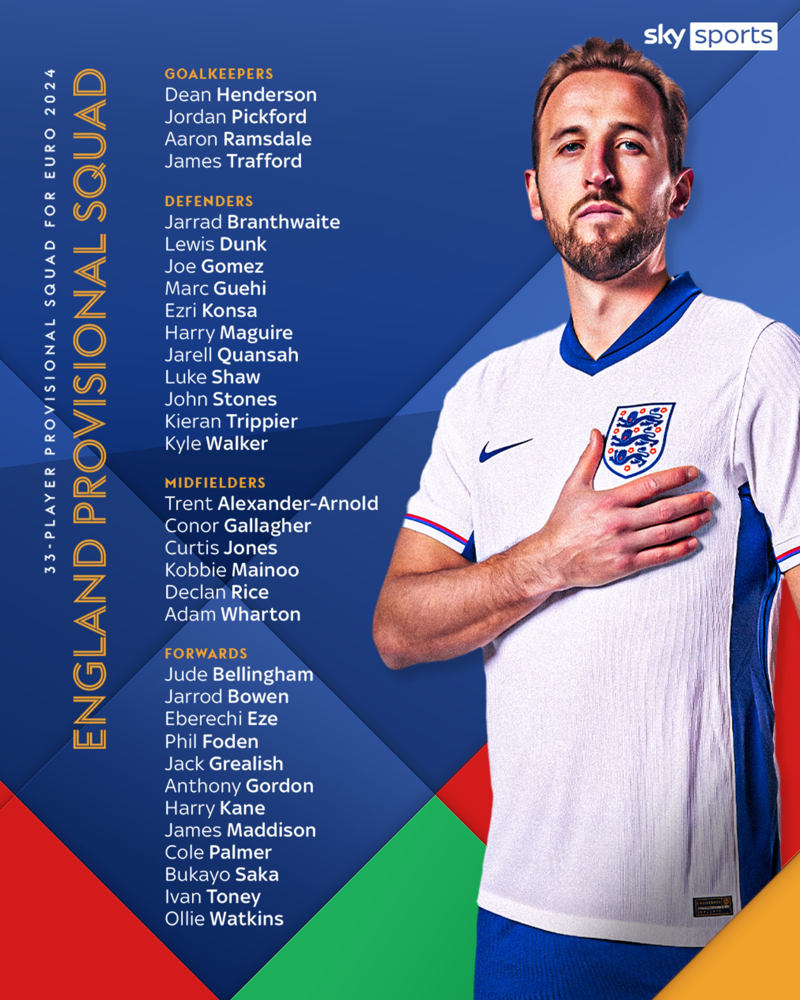
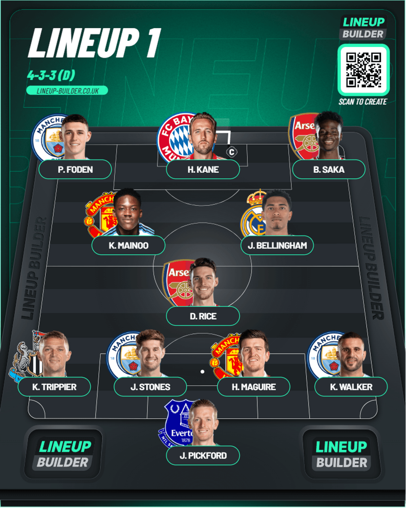
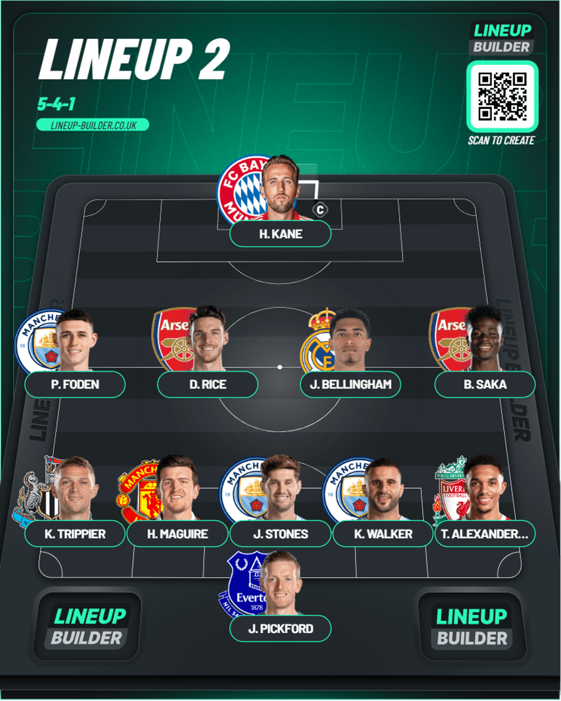

England Squad
Table of Contents
England Provisional Squad
I’ll be reacting to all the available squads till now and add the final squad once it’s announced in the same page.

Starting with England. Probably the biggest favorites to win this tournament which isn’t a surprise given the talent they’ve got and with this squad it shows. The only gripe I have is the man behind them: Yes I mean Boregate. Because honestly for the talent they have they’ve got probably the worst ever coach to lead it. In my opinion, they should win it and if they actually don’t, we know who’s at fault.
Looking at the squad we’ve got some surprises. No Rashford, Philips and Henderson given how much Southgate has taken them is out of the blue. Nonetheless it’s a really strong squad. I see 2 ways they could play this. A standard 4-3-3 or 5-4-1(knowing Boregate).
Goalkeeper
I feel Pickford will get the nod as always since he’s a favorite and also he’s got the form to back it up. 13 clean sheets which was second to Raya from Arsenal who had 16 with a Everton team who had to grind to get over their point deductions and further off field troubles is really good to see. I think he isn’t going to be budged by Ramsdale who’s become second choice clearly and Dean Henderson who’s only properly played this year for Crystal Palace. James Trafford in all honesty feels like a pity pick given Muric played more than him for Burnley
Defense
There’s good shouts all around. Maguire is a favorite for Southgate but as a United fan I’ll admit he’s been in solid form this season so he might get in alongside Stones. In the full back position we’ve got an okayish variety with Trent, Walker, Trippier and Gomez who can play there and at CB. I feel Walker and Trippier could get the nod if it’s a 4 at the back and Trent and Trippier if it was a 5 at the back with Walker slotting in as the extra CB. I’d go Shaw instead of Trippier once he’s fit mostly because he prefers England in all honesty to United 😑 . I feel bad for probably Guehi, Branthwaite and all because they’d be so much better but Branthwaite needs more experience and Guehi could maybe slot in if Walker is unavailable for the 5 back probably. Dunk and Quansah also feel extra but I guess some depth is good
Midfield
This is one crazy midfield they’ve got. The emergence of Kobbie Mainoo(Recent FA Cup winner with United Ayyyyy 😝) has given these guys a brilliant dimesion to the midfield if they go for the 4-3-3. Rice and Bellingham are coming off of really good seasons for Arsenal and Real Madrid respectively so they’re all shoo-ins for the 3 in the midfield. Rice being the shield with Bellingham and Mainoo being the expressive ones. If it’s actually going to be a 5 at the back I don’t think it would work with just Rice and Bellingham and the wingers. The other people in this list Gallagher is a good pick because of his work rate. Jones feels like an odd one. Adam Wharton I’m not too fussed by because he was a really good January signing by Crystal Palace who’s become a good mainstay in that team
Attack
Another place where these lot are stacked. I genuinely love England’s talent but my only problem is who they’ve got to lead them. You’ve got Kane who had by far the best individual debut he could’ve had in Bayern Munich. In backups, you’ve got Watkins who’s recorded 32 G/A this season with Aston Villa as they’ve got Champions League football for next season. You’ve got Toney who’s hit form after coming back from his betting ban as a decent option too. In the wings you’ve got quality as well. Foden who’s had a league winning season with City. Saka who pushed Arsenal all the way to 2nd. Arguably the best breakout performer in the squad who deserves a start is Cole Palmer who’s recorded 33 G/A in a Chelsea team which was floundering before he got them to Conference League football(United pushed them there 😂). Grealish is the one choice I don’t get here because honestly he fell off the radar this season for City and I’m wondering how he got the seat ahead of Rashford who has had a horrible season for United for sure but is a real game changer to have atleast off the bench. I can accept Rashford not being there but there’s no explanation to Grealish being there. Eze and Bowen have had storming seasons for their club this season so I’m not surprised. Maddison is alright because he started the season REALLY well before his injury and he didn’t seem to look the same since that. Gordon is a good pick too because he’s had a good season with Newcastle in their push….where they’re out of Europe because of us 😎.
Lineups
From what the squad I think the best way to play this would be a 4-3-3 but Southgate could also do either a 4-2-3-1 or even a 5-4-1 if he wants to play it very defensively. I’ll just run through the first and the last one. The first one is how I’d prefer to see England line up
4-3-3

5-4-1

I really REALLY REALLY hope he doesn’t go for the 2nd one because from here it just looks so awful honestly.
Final Exclusions from the squad
The seven that have been axed from this squad are:
* James Maddison: Expected it to be honest because his second half of the season just didn't come up to the heights of the first half of the season
* Curtis Jones: Honestly felt odd to even begin with because he was hardly playing and he had the occasional sub appearance
* Jack Grealish: Thank God he did this because he didn't start enough to warrant a call up just like how Rashford had the worst form ever this season. That's the pitfall of playing for City. He's lost his unpredictability and dribbling for what? To be a bit part player ultimately for 100 million.
* Harry Maguire: Didn't recover quick enough from his injury apparently so he's been axed which is a shame. But since they have Dunk I don't think it'd be a huge miss. Instead of Maguire I'd probably go for Guehi or Konsa in the lineups now looking at it
* Jarrad Branthwaite: Surprised at this one honestly because he's had a decent season with Everton but given Konsa and Guehi have had more consistent seasons with their clubs so I'm alright with it. If he works hard he can have a shot eventually. He'll be one to watch in the coming years in terms of talent and where he'll go
* James Trafford: Like I said before, this was a pure pity pick because Muric played more than him this season so not al all surprised
* Jarell Quansah: Honestly with the mistake he did against us, he shouldn't have been anywhere near this squad but he's gone so I'm not too fussed about it